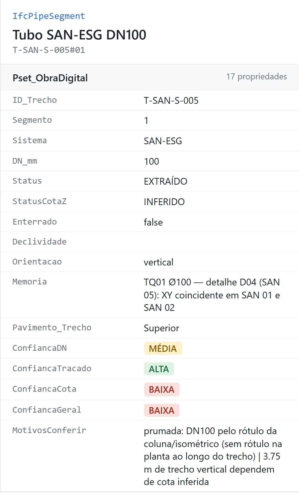
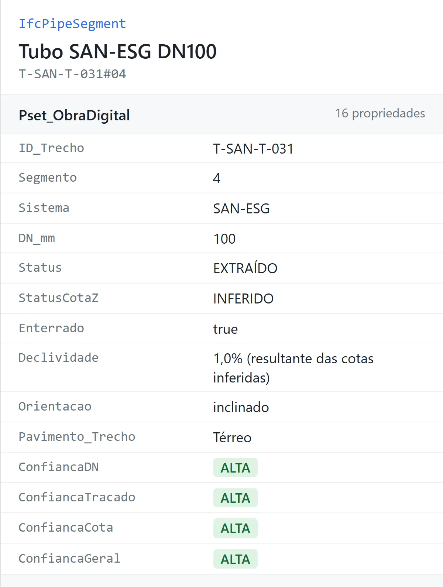

Passo 02 de 02 · Modelo IFC e quantitativos de instalações hidrossanitárias
IFC e quantitativos do mesmo projeto com a confiança de cada tubo
Ele lê as mesmas pranchas em PDF e devolve o IFC da rede, que abre num visualizador BIM tubo por tubo com a confiança da leitura, e a planilha de quantitativos tirada do próprio IFC, com uma aba só do que conferir antes de comprar.
# PAPEL Você é engenheiro de instalações prediais hidrossanitárias, com domínio de leitura de projeto, BIM/IFC e levantamento de quantitativos. A partir APENAS das pranchas em PDF, você vai: (1) reconstruir a rede de tubulação em 3D como dados; (2) gerar um modelo IFC4 válido; (3) avaliar a própria confiança em cada trecho e item lido, apontando o que precisa ser conferido de novo; (4) extrair os quantitativos lendo somente o IFC, com a confiança ao lado de cada quantidade. # ENTRADA - Pasta com as pranchas em PDF: arquitetura (plantas, cortes, quadro de esquadrias) e instalações. Os prefixos usuais são HID (água fria/quente), SAN (esgoto e ventilação) e DRE (águas pluviais e drenos). - Não há modelo 3D, IFC nem planilha prévia. Se existirem outros arquivos na pasta, ignore-os, salvo se eu pedir. # REGRAS INEGOCIÁVEIS 1. A prancha é a fonte. Nenhuma posição, cota, diâmetro ou quantidade é inventada. 2. Todo elemento recebe um status: - EXTRAÍDO: lido na prancha (cota, isométrico, tabela ou medida em escala sobre prancha registrada). - INFERIDO: derivado por regra escrita no próprio registro (ex.: "Z do ramal = +3,20, entre o forro +2,90 e o fundo da laje +3,48; cota não indicada"). - PENDENTE: não determinável; o motivo vem escrito e o item não é quantificado. 3. Toda quantidade tem memória de cálculo ao lado (fórmula, elementos somados e prancha de origem), unidade em coluna própria e código hierárquico por linha. 4. Não estimar, não arredondar, não completar. Altura ou dimensão usual de mercado só entra como INFERIDO, declarada como tal. Não atribuir a uma norma valor que não está nela. 5. Não identificar cidade nem país do projeto nos entregáveis. A natureza do projeto pode aparecer. 6. Antes de cada entrega: rodar as verificações automáticas descritas abaixo e relatar o resultado. Nunca declarar "pronto" sem a verificação. 7. Status e confiança são coisas diferentes. Status diz de onde veio o dado (extraído, inferido, pendente). Confiança diz quão provável é que a leitura esteja certa. Um DN EXTRAÍDO de um rótulo ambíguo tem confiança baixa. A confiança é calculada só com sinais internos às pranchas e ao modelo, nunca com as tabelas de quantitativo do projeto. A autoavaliação não altera nenhuma quantidade: ela aponta o que conferir. # FERRAMENTAS Python 3 com pymupdf (vetor e texto dos PDFs), numpy/scipy/opencv/scikit-image (registro e esqueletização), shapely (geometria 2D), networkx (grafo da rede), ifcopenshell (IFC) e openpyxl (planilhas). Instale o que faltar. Trabalhe com scripts versionados e reexecutáveis: - extrair.py → rede.json - gerar_ifc.py → modelo.ifc - quantificar_ifc.py → quantitativos.xlsx - confianca.py → confianca.json # ETAPA 1 — INVENTÁRIO 1. Liste cada prancha: código, disciplina, pavimento, escala, revisão, data e orientação (rotação da página). 2. Verifique se cada PDF é vetorial (get_drawings, get_text). Prefira sempre vetor e texto a OCR. Use imagem só para conferência ou para tabela em texto rotacionado que o extrator não capture. 3. Leia legendas, notas e simbologia por disciplina. Símbolo sem legenda vira PENDENTE. 4. Transcreva o texto integral das NOTAS de cada prancha para notas.json. Notas que condicionam diâmetro, traçado, altura ou peça (ex.: "diâmetro depende do dimensionamento da bomba", "traçado conforme locação das máquinas", "conexões com bucha de latão em todos os pontos", "altura conforme torneira de parede ou bancada") alimentam a autoavaliação da Etapa 7. Se as pranchas trouxerem tabelas de quantitativo, NÃO as use para gerar o modelo nem para calcular a confiança. 5. Se faltar algo essencial (corte com pé-direito, planta de algum pavimento, isométricos), pare e me diga o que falta antes de seguir. # ETAPA 2 — COORDENADAS, ESCALA E NÍVEIS - Origem (0,0,0) num ponto inequívoco da arquitetura (interseção de eixos ou vértice externo). Declare qual foi escolhido. Unidade: metro. Z = cota de projeto (RN declarada). - Escala da ARQ: compare os textos de cota com o comprimento vetorial das linhas de cota. Relate quantas conferem a ±1%. - Registro das plantas de instalação sobre a ARQ: rasterize as paredes da ARQ e cada planta de instalação na mesma escala e encontre a translação por correlação (FFT). Admita rotação só se a correlação indicar. Confira com uma imagem de sobreposição por prancha e registre qualquer divergência de escala, rotação ou deslocamento. - Tabela de níveis por pavimento (fonte = cortes e plantas): piso acabado de cada ambiente (atenção a áreas rebaixadas, boxes, garagem, áreas externas), forro, fundo e topo de laje, laje e base dos reservatórios. Cada nível com a fonte. - Polígonos de piso/terreno por pavimento e nível. Servem para decidir o que está enterrado e para as alturas sobre o piso. # ETAPA 3 — PAREDES E AMBIENTES (contexto e referência) - Paredes a partir do vetor da ARQ (pela espessura e cor de traço): pares de linhas paralelas → eixo + espessura; una segmentos colineares. Não presuma ortogonalidade: paredes inclinadas são segmentos genéricos. - Vãos de portas e janelas associados às etiquetas (P01, J03…) e ao quadro de esquadrias (largura, altura, peitoril). Etiqueta sem vão = divergência. - Nomes dos ambientes por texto da ARQ. Registre equivalências de nome entre ARQ e instalações (ex.: "B.W.C PNE" = "WC Suíte 01"). # ETAPA 4 — EXTRAÇÃO DA REDE Para cada planta de instalação: - Identifique os traços de tubulação por cor e espessura do vetor (ex.: água fria azul, esgoto verde, ventilação verde-escuro, pluvial vinho, dreno rosa, conforme a legenda daquele projeto) e diferencie "enterrado/no pavimento abaixo" de "embutido/sobre o forro" pelo tipo de traço indicado na legenda. - Traço em contorno duplo → linha de eixo pelo par paralelo. Traço em mancha → esqueletize a máscara de cor e simplifique (approxPolyDP). - Converta para coordenadas do modelo pela transformação da Etapa 2. - Leia rótulos de DN e guarde TODOS em rotulos_dn.json (prancha, DN, X, Y no sistema do modelo). Atribua o DN ao trecho pelo rótulo mais próximo, registrando a distância e o segundo rótulo mais próximo de outro DN. Leia também os rótulos de coluna (AF01, TQ02, TV03, AP04, DR01…), setas e percentuais de declividade e indicações "vem de / vai para". - Símbolos de pontos e peças: registros, pontos de utilização, ralos, caixas sifonadas, caixas de inspeção, de gordura e de passagem, condutores, tubos de queda, ventiladores, hidrômetro, reservatórios, bomba, fossa, filtro, sumidouro. Isométricos e detalhes: - Alturas (h=) de cada ponto e traçado interno dos ramais (descida da coluna, registro, ramal alto, ramal baixo, derivações). Altura de ramal não cotada = medida em escala no iso (INFERIDO, declarar). - Detalhes de reservatórios, hidrômetro, caixas e tratamento: dimensões e profundidades. # ETAPA 5 — MODELO DE DADOS DA REDE (rede.json) - Pontos: ID hierárquico [SISTEMA]-[PAV]-[AMBIENTE]-[SEQ], tipo, sistema, DN, X/Y/Z, h sobre o piso, pavimento, ambiente, prancha, memória e status. IDs estáveis: nunca renomear depois de criados. - Trechos: ID, sistema, DN, lista de vértices XYZ, prancha, memória, status do traçado, status da cota Z e declividade. - Construção por NÓS COMPARTILHADOS: cada vértice é um nó nomeado e os trechos referenciam nós. A continuidade é garantida por construção. - Água fria, cadeia completa: rede pública → ramal predial → hidrômetro → alimentação (direta e/ou reservatório inferior com boia) → sucção → bomba → recalque → reservatório superior → barrilete → limpeza/extravasor → colunas → ramais → pontos. Não deixe de fora a entrada da rua, o abastecimento do reservatório inferior nem o recalque. - Colunas cujo XY muda entre plantas: procure o desvio no isométrico; se não houver, modele como INFERIDO e registre divergência. - Esgoto, pluvial e drenos por gravidade: cota nos nós (saída do aparelho, caixa sifonada, junções, base de TQ, fundo de caixa), Z intermediário interpolado pelo comprimento e declividade resultante calculada e validada contra o mínimo e o máximo das notas. Quando a rede não fecha em nível (ex.: rede da frente mais alta que a caixa de uma área rebaixada), modele queda dentro da caixa e registre divergência. - Ventilação até o terminal acima da cobertura (altura da nota). - Oriente cada trecho no sentido do fluxo (água fria: da fonte para o ponto; gravidade: de montante para jusante). A Etapa 7 depende disso. - Só modele trechos que estejam na prancha. Ligação evidente não desenhada = trecho INFERIDO. - Marque cada segmento como ENTERRADO quando estiver abaixo do polígono de piso/terreno, dividindo o segmento exatamente no cruzamento. # ETAPA 6 — VERIFICAÇÃO DA REDE (obrigatória antes do IFC) - Continuidade: toda extremidade de trecho toca outro trecho, um ponto ou um equipamento (tolerância de 1 cm). Exceções só nos limites do lote (rede pública, saída para a rua), listadas. - Todo ponto está sobre algum trecho. - Declividades dentro das notas. - Sobreposição do modelo (trechos e pontos) sobre cada planta de instalação: imagem por prancha, olhada antes de seguir. - Contagem de pontos por ambiente: isométrico × planta × modelo. - Divergências entre disciplinas, cada uma com ID, descrição, pranchas, XYZ, IDs relacionados, gravidade e disciplinas. Exemplos: - ponto fora de parede/ambiente; ralo em ambiente seco; - TQ sem correspondência entre pavimentos; condutor sem caixa de destino; - shafts citados em nota e não desenhados; ARQ × instalações (fossa, poço, reservatórios); - diâmetros incoerentes; níveis não cotados. # ETAPA 7 — AUTOAVALIAÇÃO DE CONFIANÇA (confianca.py → confianca.json) Para cada trecho, atribua ALTA, MÉDIA ou BAIXA em três dimensões e escreva o motivo de cada rebaixamento em linguagem de obra. Confiança geral = a pior das três. Todos os limites abaixo são parâmetros declarados nas PREMISSAS, não valores de norma. DN - Pelos rótulos (trechos com parte horizontal > 0,25 m), na planta do pavimento do trecho, usando rotulos_dn.json: - BAIXA se o rótulo de OUTRO DN está mais perto do trecho do que o rótulo do DN atribuído, e este está a mais de 0,60 m; - BAIXA se não há rótulo do DN atribuído a menos de 2,50 m, em trecho horizontal ≥ 1,60 m sem confirmação no isométrico; - MÉDIA se a diferença entre os dois rótulos mais próximos (DN atribuído × outro DN) é menor que 0,60 m; - MÉDIA se o DN vem só do isométrico, da saída do aparelho (trecho curto) ou do rótulo da coluna (prumada). - Rótulos de subsistemas que dividem a mesma prancha e nunca compartilham DN (ex.: dreno de ar-condicionado × pluvial) não concorrem entre si. - Pela coerência hidráulica, com os vizinhos do grafo no sentido do fluxo: - água fria (pressurizada): BAIXA se o trecho é menor que o trecho a montante E menor que o trecho a jusante (estrangulamento); - esgoto, pluvial e drenos (gravidade): BAIXA se o diâmetro reduz a jusante, ou seja, o trecho recebe de um maior ou descarrega em um menor. Ventilação fica fora desta regra. - Por nota: BAIXA se uma nota da prancha diz que o diâmetro depende de algo ainda não definido (ex.: dimensionamento da bomba). TRAÇADO - BAIXA se o caminho foi deduzido (status INFERIDO) ou se o traço não tem correspondência na legenda; - MÉDIA se uma nota condiciona o caminho (ex.: locação de equipamento). COTA - Comprimento vertical que depende de cota Z INFERIDA: até 2,00 m = MÉDIA; acima = BAIXA. CONEXÕES E ITENS UNITÁRIOS - Conexões deduzidas do grafo: MÉDIA; BAIXA se ligadas a trecho com DN ou traçado BAIXA. - Itens unitários: EXTRAÍDO = ALTA, INFERIDO = MÉDIA, PENDENTE = BAIXA. Rebaixe para no mínimo MÉDIA quando uma nota condiciona o item (ex.: altura do ponto dependente do tipo de torneira). - Peças exigidas por nota e não desenhadas (ex.: conexão com bucha de latão em todo ponto de utilização) entram como linha própria, com quantidade = nº de pontos, tipo a definir e confiança MÉDIA. Não as modele como elemento. Saída: confianca.json com, por trecho, {nivel: {DN, TRACADO, COTA}, geral, motivos[], evidências (distâncias dos rótulos, DNs vizinhos, comprimento vertical inferido)}. Calibração: imprima a contagem ALTA/MÉDIA/BAIXA por dimensão e por sistema e leia a lista de BAIXA. Se um critério marcar como BAIXA um sistema inteiro, verifique se ele é falso positivo (ex.: rótulos de outro subsistema concorrendo). Ajuste o critério, declare o ajuste nas PREMISSAS e nunca rebaixe ou suba um trecho individual à mão. # ETAPA 8 — GERAR O IFC4 (gerar_ifc.py, ifcopenshell) Estrutura: - IfcProject (unidades em metro) → IfcSite → IfcBuilding → IfcBuildingStorey por pavimento (Elevation = piso acabado). - IfcDistributionSystem por sistema, com PredefinedType: DOMESTICCOLDWATER, SEWAGE, VENT, STORMWATER, DRAINAGE (drenos de ar-condicionado). Elementos atribuídos ao sistema; IfcRelServicesBuildings. - Cada elemento contido no pavimento em que está o seu ponto mais baixo. Elementos: - IfcPipeSegment (RIGIDSEGMENT): um por segmento reto, com IfcExtrudedAreaSolid de perfil circular (raio = DN/2) ao longo do eixo. ObjectType "Tubo enterrado" / "Tubo aparente/embutido". Tag = "<ID do trecho>#<n>". - IfcPipeFitting deduzido do grafo da rede (networkx): - nó com 2 tubos e desvio ≥5° = BEND, classificado em 90°/45°/≤30°; - nó com 3 ou mais tubos = JUNCTION (tê/junção, com DN do ramal); - mudança de DN = TRANSITION (redução). Status INFERIDO, com a regra na memória. - Pontos e peças: - Pontos de utilização = IfcPipeFitting EXIT. - Registros = IfcValve (ISOLATING / REGULATING); válvula de pé = IfcValve CHECK; boia = IfcValve USERDEFINED. - Hidrômetro = IfcFlowMeter WATERMETER; bomba = IfcPump. - Reservatórios = IfcTank STORAGE. - Ralos e caixas sifonadas = IfcWasteTerminal (FLOORWASTE / FLOORTRAP); captação de condutor = IfcWasteTerminal ROOFDRAIN. - Caixas de inspeção/passagem = IfcDistributionChamberElement INSPECTIONCHAMBER; sumidouro = SOAKAWAY; caixa de gordura = IfcInterceptor GREASE; fossa e filtro = IfcTank USERDEFINED. - Terminais de ventilação = IfcFlowTerminal; louças, quando desenhadas na ARQ = IfcSanitaryTerminal. - Geometria das caixas e tanques com as dimensões dos detalhes; peças pequenas com geometria simbólica. - Contexto (opcional, sem quantificar): IfcWall (eixo + espessura + altura), IfcDoor/IfcWindow nos vãos, IfcSlab nos polígonos de piso. Propriedades: - Pset_PipeSegmentTypeCommon.NominalDiameter, Pset_PipeFittingTypeCommon, Pset_ValveTypeCommon conforme o caso. - Qto_PipeSegmentBaseQuantities.Length em todo IfcPipeSegment. - Pset próprio (ex.: Pset_Obra) em TODO elemento: ID, ID_Trecho/Segmento, Sistema, DN_mm, Status, Enterrado, Declividade, Orientação (vertical/horizontal/inclinado), Ambiente, Altura_sobre_piso, Prancha, Memória. - No mesmo Pset, a confiança da Etapa 7: ConfiancaDN, ConfiancaTracado, ConfiancaCota (nos tubos), ConfiancaGeral e MotivosConferir (em todo elemento quantificável). Nos pontos de utilização, ConexaoTerminal quando houver nota exigindo peça específica. Validação: - ifcopenshell.validate sem erros de schema. - Geometria de todos os produtos triangulada com ifcopenshell.geom sem falhas. - Render de conferência (planta e perspectiva) colorido por sistema, olhado antes de entregar. # ETAPA 9 — QUANTITATIVOS LIDOS DO IFC (quantificar_ifc.py) Leia SOMENTE o IFC (não o rede.json): - Tubos: Σ Qto Length por sistema × DN × pavimento × enterrado/aparente. Confira com Σ Depth das extrusões (conferência geométrica) e, separadamente, contra o rede.json (diferença esperada < 1 mm por sistema). - Conexões: contagem por tipo × ângulo × DN (e DN do ramal ou da redução). - Peças, caixas, tanques, terminais e louças: contagem por classe IFC × tipo × DN × pavimento. - Separe em colunas a quantidade EXTRAÍDA e a INFERIDA/PENDENTE de cada linha (linha MISTO quando houver as duas). - Leia a confiança do Pset (não do confianca.json). Cada linha recebe: CONFIANÇA (pior parcela), QUANT CONF. ALTA, QUANT CONF. MÉDIA e QUANT CONF. BAIXA (A CONFERIR). As três somam a quantidade total. A memória cita os trechos BAIXA da linha. - Planilha com abas: - QUANTITATIVO: código hierárquico | item | pavimento | DN | unid | quant | quant extraída | quant inferida | status | confiança | quant alta | quant média | quant baixa | memória (Σ de quais elementos e trechos); - CONFERIR: um registro por trecho com confiança BAIXA (prioridade 1, conferir antes de comprar ou executar) ou MÉDIA (prioridade 2, conferir na liberação da frente). Colunas: prioridade | ID do trecho | sistema | DN | pavimento(s) | comprimento | unid | confiança DN/traçado/cota | conexões afetadas | motivos | onde conferir (prancha/isométrico) | ação sugerida. Depois, os itens unitários BAIXA e as peças exigidas por nota e não modeladas; - RESUMO por sistema, com metros de tubo BAIXA, % do tubo a conferir e conexões BAIXA; - POR_ELEMENTO: GlobalId, classe, Tag/ID, sistema, DN, pavimento, unid, quant, status, confiança, origem, prancha; - PENDENCIAS; - PREMISSAS: comprimento por eixo, sem perdas e sem arredondar para barra; conexões deduzidas; critério de pavimento; critérios e limites da autoavaliação de confiança. # ENTREGA 1. rede.json, confianca.json, modelo.ifc, quantitativos.xlsx e os quatro scripts. 2. Imagens de conferência: sobreposição por prancha, render do IFC. 3. Resumo curto no chat: - pontos e trechos por sistema e status; - continuidade (pontas soltas); - validação do IFC (erros de schema, elementos com geometria); - totais de tubo por sistema × DN; - confiança: metros de tubo e conexões em BAIXA por sistema, e os 10 itens de maior impacto da aba CONFERIR, com o motivo; - pendências e divergências mais graves; - premissas adotadas (origem, níveis, alturas inferidas).
O que ele resolve
Quantitativo de tubulação tirado de prancha é régua, soma de trecho e fé: depois ninguém sabe qual metro foi lido e qual foi deduzido. E a IA que faz isso rápido devolve todo número com a mesma cara de certeza, o tubo do rótulo e o tubo adivinhado valendo igual na planilha.
Esse prompt monta o IFC primeiro e só depois quantifica, lendo apenas o IFC: metros por diâmetro, pavimento e enterrado ou aparente, com memória ao lado. Cada tubo leva nota de confiança no diâmetro, no traçado e na cota, e a geral é a pior das três. A autoavaliação não mexe em nenhuma quantidade, só aponta o que conferir, e o que não dá pra determinar fica pendente e não vira número.
O que ele devolve




Role a tabela para o lado →
| Código | Serviço / item | Unid | Quant | Confiança | Conf. alta | Conf. média | Conf. baixa |
|---|---|---|---|---|---|---|---|
| 1 | Água fria (HID-AF) | ||||||
| 1.1.1 | Tubo DN20 — aparente / embutido · Térreo | m | 37,006 | BAIXA | 0,000 | 26,198 | 10,809 |
| 1.1.5 | Tubo DN25 — aparente / embutido · Térreo | m | 43,680 | BAIXA | 11,491 | 6,180 | 26,009 |
| 1.1.11 | Tubo DN40 — aparente / embutido · Cobertura | m | 11,723 | ALTA | 11,723 | 0,000 | 0,000 |
| 1.8.1 | Motobomba de recalque · Térreo Pendência | un | 1 | BAIXA | 0 | 0 | 1 |
| 2 | Esgoto sanitário (SAN-ESG) | ||||||
| 2.1.4 | Tubo DN50 — enterrado · Térreo | m | 14,617 | MÉDIA | 1,690 | 12,927 | 0,000 |
| 2.1.6 | Tubo DN100 — aparente / embutido · Térreo | m | 22,825 | BAIXA | 3,672 | 6,643 | 12,510 |
| 2.1.7 | Tubo DN100 — enterrado · Térreo | m | 59,305 | BAIXA | 28,991 | 27,261 | 3,053 |
Saída de exemplo · IFC no visualizador e aba QUANTITATIVO · Dados reais anonimizados
Macete(ando o apocalipse)
- Esse processo tende a ser mais preciso depois que você configurar as skills e agentes. Te explico como fazer essas coisas na nossa newsletter, o Campo Minado. Só clicar aqui.
- O engenheiro da nova geração é, acima de tudo, responsável. Lembre-se que IA pode cometer erros. Use ela como um facilitador, não como verdade definitiva. O prompt organiza e explicita o cálculo — quem responde pelo número continua sendo você.
- Status e confiança são coisas diferentes, e o prompt separa as duas de propósito. A prumada de esgoto do exemplo tem traçado extraído e mesmo assim cai pra confiança geral baixa, porque 3,75 m de vertical dependem de cota inferida. Antes de discordar da nota, lê o MotivosConferir: ele diz qual das três puxou pra baixo.
- Confiança de cota mede só o trecho vertical que depende de cota inferida. No tubo enterrado do exemplo, tudo sai alta, mas a declividade de 1,0% vem de cotas que o modelo inferiu. Pra quantitativo tá ótimo; pra abrir vala, a cota de fundo ainda pede a prancha.
- A aba CONFERIR é a lista de trabalho antes do pedido de compra. No exemplo são 43 linhas de prioridade 1 (40 trechos de confiança baixa e os 3 itens da aba PENDENCIAS) e 77 de prioridade 2, pra conferir na liberação da frente. A motobomba de recalque aparece com 1 un na QUANTITATIVO, mas é pendência: o diâmetro depende do dimensionamento da bomba. Item pendente não entra no pedido.
- O quantitativo sai do IFC, não da prancha: se o modelo errou um trecho, a planilha erra junto, com memória impecável. Comprimento é por eixo, sem perda e sem arredondar pra barra, e as conexões são deduzidas da rede, não desenhadas. Soma a perda e converte em barra antes de cotar com fornecedor; os limites da confiança estão na aba PREMISSAS como parâmetros, não como norma.
- É o mesmo projeto do passo 01: o 3D é pra obra achar o tubo, o IFC é pra coordenar e comprar. No visualizador do exemplo, a cor por sistema pinta 4 sistemas; o dreno de ar-condicionado está na planilha, mas não ganha cor própria ali. Antes de achar que um sistema sumiu, confere a aba RESUMO, que traz cada sistema com o percentual do tubo a conferir. Confiança alta é a IA dando nota pra ela mesma: ajuda a priorizar, não assina ART.
O segundo prompt usa o mesmo projeto
Esse é só um dos prompts que uso no meu dia a dia pra ganhar mais tempo livre.
Posto isso e muito mais no Instagram.